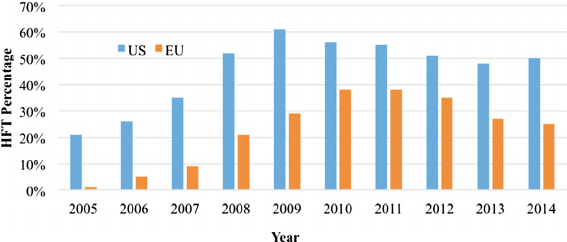

Within this paper, I will discuss High Frequency Trading (HFT) Algorithms and their role in creating
an increasingly significant gap between individual traders with limited resources and large firms in the
UK financial markets that posse’s substantial capital and advanced technological capabilities. My
objective is to determine whether individual traders can effectively utilise HFT Algorithms in a manner
comparable to these large firms, or if such a task futile.
High Frequency Trading Algorithms are complex algorithms that can process large number of trades within
milliseconds, using the algorithm it is able to analyse the market data at such high speeds to identify
the difference in market price. An example of this working is saying the “HFT system notice a stock is
priced at $50.00 on Exchange A but $50.01 on Exchange B, they can buy from A and sell on B, making
a micro-profit. When scaled to millions of trades daily, these profits become significant”.
(Trading View, 2023) By using HFT Algorithms firms can gain an advantage on the tiny difference
and generate quick profits, even though they are very small changes in the price it is able to execute
at such a high speed that the large number of small profits add up to large amounts in the long term.
(Utradealgos.com,2024). The first signs of firms using HFT Algorithms was in the late 90s, but in the
mid-2000s the use of HFT Algorithms started to increase. If we look at today’s markets, we can see that HFT
accounts for a larger proportion of all equity trades in the US, the percentage was under 10% in 2005 to
about 65% today. However, if we look at the UK the percentage of equity trades are 35%. This is a clear
sign to show that as the advancement and the accessibility of technology increases so will the percentage of
HFT Algorithms in are financial markets will. (Financial, C. to T.L. 2023).
Analysis and discussion
Advantages of HFT Algorithms
HFT allows large firms to trade at incredibly high speeds, enabling them to be able
to make the most of the fluctuations in prices during trading times. Being able
to make such high amounts of trades in such a small-time frame, gives them
such a big advantage compared to the individual trader who cannot keep up with
this level. (Skilling.com, 2024). Another advantage of firms using HFT Algorithms
is that they can take a large amount of data in real time and analyse it more
efficiently than the average trader could, this will result in the firm being able
to execute more profitable and consistent results. Financial, C. to T.L. (2023). ).
They also offers significantly lower trading costs by automating processes that
would usually need manual intervention. This includes task such as data analysis,
executing trades and adjusting strategies to real time. As firms utilise this technology,
it also lowers the probability of errors occurring as it eliminates the element of
human errors, such as delayed reactions. By using HFT Algorithms rather than large trading
teams, firms can cut down on the price of costs in the long run. However, a majority
of the people may find this to be an disadvantage, as they are removing the use of
people are replacing them with a machine, leaving people without jobs and a salary.
(Columbia Business School, 2013).
Disadvantages of HFT Algorithms
One of the main disadvantages of big firms using HFT Algorithms is that it causes an unequal
access to the financial market as individual traders do not have the resources or
capital to be able to acquire such technology. This causes an unfair playing field
because when big firms use HFT Algorithms it causes an increase in the market volatility.
This Is because the firms will be making high amounts of trades at incredibly high speeds,
which can cause market volatility and cause large price swings, meaning that the normal
everyday trader will not be able to keep up with this and increase their probability
of failure. (Skilling.com, 2024).
Mathematics involved in HFT Algorithms
High frequency trading algorithms involve a wide range of mathematical process when
managing and adapting to different circumstances that is presented by the markets.
One of the mathematical processes that HFT Algorithms use is called Stochastic
differential equations. “These equations model the evolution of financial variables
over time, incorporating both deterministic trends and random noise.” (Alfredo, B. (2024).
Optimization of Stochastic Processes in High-frequency Trading: A Mathematical Framework).
One of the models that uses stochastic differential equations is called the Black-Scholes
model for option pricing, more advanced models will also add in features such as
volatility clusters and jumps, this is seen in the use of high frequency data. Being able
to use advanced mathematics such as this is a big advantage over the individual trader
that will not be able to utilise such models as it will be too time consuming compared
to a HFT Algorithm that could take in data and process it within milliseconds. (Seth, S. 2020)
(Alfredo, B. (2024).
conclusuion
In conclusion, the advancements of HFT Algorithms have changed the way that firms and individual
traders use and view the financial markets, because of this, firms are now able to gain a
greater advantage then the average trader in many factors, such as speed, efficiency and data analysis.
Because of these factors we have seen a noticeable gap between the firms and individual traders.
While the benefits of HFT Algorithms, such as efficiency speed and the cause of the rise of volatility
are undeniable, the negative side effects on the individual traders are present. Taking on
these challenges require fair access and suitable regulations.

Table of contents |
|---|
| Abstract |
| Introduction |
| Analysis and discussion |
| References |
Alfredo, B. (2024). Optimization of Stochastic Processes in High-frequency Trading: A Mathematical Framework. [online] doi:https://doi.org/10.37421/2168-9679.2024.13.574.
High frequency trading: what does it involve? [online] Available at: https://skilling.com/eu/en/blog/trading-strategies/high-frequency-trading/ [Accessed 30 Oct. 2024].
Seth, S. (2020). The World of High-Frequency Algorithmic Trading. [online] Investopedia. Available at: https://www.investopedia.com/articles/investing/091615/world-high-frequency-algorithmic-trading.asp.
TradingView. (2023). Available at: https://www.tradingview.com/chart/QQQ/Ffxj6rWV-High-Frequency-Trading-Deep-Dive-into-its-Multifaceted-Impact/ [Accessed 3 Dec. 2024].
Utradealgos.com. (2024). What is High Frequency Algo Trading? - uTrade Algos. [online] Available at: https://www.utradealgos.com/blog/high-frequency-algorithmic-trading [Accessed 28 Oct. 2024].
Columbia Business School (2013). High-Frequency Trading: Is it Good or Bad for Markets? [online] Columbia Business School. Available at: https://business.columbia.edu/press-releases/cbs-press-releases
/high-frequency-trading-it-good-or-bad-markets [Accessed 5 Dec. 2024].